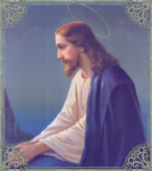
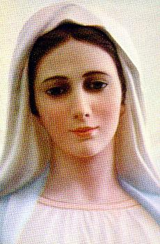
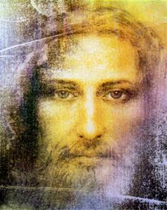

INÍCIO DA CAMINHADA
PREÂMBULO
NOSSO SENHOR carinhosamente
derrama uma extraordinária quantidade de virtudes e dons sobre a humanidade de
todas as gerações. Mas por sua
Divina Vontade, alguns
conhecimentos são ocultados ao nosso entendimento e constituem os
“Segredos de DEUS”.
Estes “Mistérios”, embora
ocultos ao conhecimento humano, em certas manifestações sobrenaturais, o
SENHOR concede que
“determinados Segredos”, tenham relativa
permissão de divulgação para elucidação dos videntes e mensageiros celestes
sobre alguns fatos, não com uma clareza completa e definitiva, mas parcial,
justamente com a finalidade específica de sugerir linhas de pensamento,
objetivando permitir ao fiel, visualizar pelo raciocínio alguma compreensão do
“Segredo”
, e assim conseguir captar referências sobre
os
“Mistérios Divinos”.
Desse modo, com o objetivo de
criarmos uma base de entendimento sobre o imenso “Mistério da Vida”,
começaremos nossa caminhada através da História da Criação.
PROJETO DIVINO
DEUS sempre existiu e vive no
Paraíso Celeste, embora esteja sempre presente ao mesmo tempo, em todos os
lugares do Universo, pelos Seus atributos Divinos, da mesma maneira que por Sua
presciência, conhece o presente, o passado e o futuro.
Também, pela grandeza incomensurável do Seu Amor e da Sua Divina Bondade, idealizou
criar a humanidade, embora desde o início, percebesse por Sua Sabedoria infinita, que
os humanos nunca seriam totalmente fieis a grandeza do Seu infinito Amor. E por
isso mesmo, no Pensamento Divino, como passo seguinte, o SENHOR idealizou o modo
de realizar a Redenção da humanidade pecadora de todas as gerações, muito antes
das criaturas nascerem para a vida.
O SENHOR projetou Redimir a
humanidade do mesmo modo como a desejou Criar: com Amor e Imensa Satisfação,
porque DEUS é só Bondade e Misericórdia Infinita. ELE não ia permitir que o Seu
Amoroso Projeto da Humanidade deixasse de existir logo no início da criação, vencido
por forças que poderiam surgir da liberdade que ELE mesmo concedeu as criaturas.
Desse modo, a criação por si só,
é testemunha evidente do que acabamos de mencionar, ou seja, de que o SENHOR
DEUS é repleto de Amor por cada um de Seus filhos. Por que na verdade, ELE
criou a humanidade numa manifestação espontânea do Seu Divino Coração Amoroso,
e também por que quis repartir a Sua felicidade, os Seus bens, o Seu
conforto e o Seu imenso carinho que jorra do Seu Misericordioso e Sagrado
Coração, com a humanidade que ELE idealizou, porque ELE é Bom e sempre
quer amparar todos os que nascem do Seu Divino Amor.
Assim, mesmo sabendo
antecipadamente das infidelidades das Suas criaturas, nos deu a vida com
uma alma e nela derramou abundantes dons e virtudes, a fim de que estas
inigualáveis dádivas, sendo estimuladas e trabalhadas com interesse e
competência por cada um dos Seus filhos, os estimulassem a vencer as próprias
fraquezas humanas e, os convidassem a alcançar metas na existência, assim como
construir ideais para a sua vida.
Então, esta realidade representa
em letras maiúsculas, um retrato fiel do SENHOR, provando que DEUS é
Verdadeiramente Bom e nos Amou Primeiro, por que nos fez existir no interior do
Seu Projeto Divino, muito antes de nascermos para a Vida.
A CRIAÇÃO E O PECADO
 As Sagradas Escrituras descrevem
com detalhes, a história Bíblica do primeiro homem, Adão, e da primeira mulher,
Eva, denominados: nossos primeiros pais. Tendo eles recebido do SENHOR na
“graça inicial”: dons, virtudes, alem de
“prerrogativas especiais”, não corresponderam ao
Amor Divino, e logo no primeiro teste de fidelidade, cometeram dois graves pecados
diretamente contra o CRIADOR: o
“pecado da desobediência”, não respeitando e nem
atendendo ao pedido do SENHOR; e o
“pecado da soberba”, revelando a desprezível
presunção de quererem ser iguais a DEUS.
As Sagradas Escrituras descrevem
com detalhes, a história Bíblica do primeiro homem, Adão, e da primeira mulher,
Eva, denominados: nossos primeiros pais. Tendo eles recebido do SENHOR na
“graça inicial”: dons, virtudes, alem de
“prerrogativas especiais”, não corresponderam ao
Amor Divino, e logo no primeiro teste de fidelidade, cometeram dois graves pecados
diretamente contra o CRIADOR: o
“pecado da desobediência”, não respeitando e nem
atendendo ao pedido do SENHOR; e o
“pecado da soberba”, revelando a desprezível
presunção de quererem ser iguais a DEUS.
NOSSO SENHOR é eterno, não tem
princípio e nem fim. É o começo e o final de tudo o que existe. O estudo da
teologia ensina que no momento da criação, quando DEUS criou Adão e Eva, a
humanidade de todas as gerações estava espiritualmente presente no Amoroso
Coração Divino. Isto significa dizer, que ao criar os nossos primeiros pais, nós
que somos os filhos, também estávamos presentes no pensamento de DEUS e herdamos
todos os dons, virtudes e a Graça Santificante Inicial que o CRIADOR concedeu as
primeiras criaturas humanas, Adão e Eva.
Todavia, em consequência do
Primeiro Pecado, também conhecido como Pecado Original, cometido pelo casal, fez
com que eles perdessem as
“prerrogativas especiais”, que eram os
“Dons Preternaturais”
(de não morrer, não sentir dores, ver e conversar
com DEUS), ficando somente com os demais dons e virtudes da “Graça Inicial”. Desse
modo, todos nós, a humanidade de todas as gerações, que somos os herdeiros de nossos
primeiros pais Adão e Eva, em consequência do pecado cometido por eles, também não
recebemos aqueles “Dons
Preternaturais”, perdemos aqueles dons
antes de recebê-los no dia do nosso nascimento. Isto por que, em face da
transgressão cometida, as prerrogativas especiais logo foram substituídas pela
cicatriz do Pecado Original. Assim sendo, toda criatura ao nascer recebe os dons
e as virtudes que o SENHOR determinou, inclusive o “livre arbítrio”,
ou seja, a liberdade de movimentos, ações e pensamentos, mas sem as
“prerrogativas especiais”
, e no lugar delas, cada criança ao nascer recebe
a cicatriz da ofensa maldita, que predispõem a humanidade ao pecado e a morte.
A REDENÇÃO DIVINA
Por isso mesmo, DEUS
Misericórdia Infinita, antes de realizar o Projeto da Criação, viu que o pecado
se propagaria na humanidade, destruindo todas as possibilidades de salvação. ELE
não podia concordar que isto acontecesse, afinal, ELE não ia criar a humanidade
e depois permitir que ela fosse destruída pelas forças do maligno. Então o CRIADOR
decidiu que, na plenitude dos tempos, enviaria o Seu FILHO NOSSO SENHOR JESUS CRISTO,
para realizar uma sublime Missão de Amor, salvando a humanidade de todas as
gerações da servidão diabólica. E para isto, o Seu FILHO ia instituir os
Sacramentos como meios insubstituíveis à salvação, divulgaria preciosos
ensinamentos e deixaria NOSSA SENHORA, a Sua Querida e Amada MÃE, como a Mãe
Espiritual e Auxiliadora de todos que buscassem a sua eficaz e tão preciosa
proteção. E concluindo Sua Inestimável Obra, o Seu Divino FILHO JESUS ia morrer
crucificado entre dois ladrões, derramando o seu Precioso e Sagrado Sangue
sobre a humanidade de todas as gerações, redimindo todos perante ELE, o
PAI ETERNO e escancarando as portas da eternidade feliz a todos aqueles
que seguissem os Mandamentos Divinos.
Isto porque, para felicidade de
todos nós, o Sagrado Sangue de NOSSO SENHOR derramado na Cruz fez brotar a
“Graça Redentora”, que preciosamente também entra na alma das pessoas ao nascer, e neutraliza
a atividade do maligno, criando condições de não permitir que o pecado domine
impunemente sobre a pessoa individualmente e sobre a humanidade.
BONDADE INFINITA

E
então, na misericordiosa mente do CRIADOR foi esboçado os traços de uma família,
a Sagrada Família. O
FILHO DE DEUS ia nascer de uma Mulher Virgem muito especial, escolhida por ELE e
repleta de graças pelo Altíssimo. A imagem da VIRGEM MARIA, MÃE DO FILHO DE DEUS
se delineou com traços vivos na mente do SANTÍSSIMO CRIADOR. Uma mulher
maravilhosa! Nascida no mundo, conforme a Vontade Divina, MARIA conheceu José,
que foi o pai nutrício de JESUS e seu companheiro digno pelo matrimônio na jornada
existencial, na luta do quotidiano, nas tristezas e nas alegrias de cada momento,
como modelo digno e admirável para todas as famílias do Universo.
E desse modo, definido o alicerce da Sagrada Família, na época marcada, ou seja, na
plenitude dos tempos, JESUS, a Segunda Pessoa da SANTÍSSIMA TRINDADE, que sempre existiu
na eternidade com o PAI e o ESPÍRITO SANTO,
deixou o convívio Divino e nasceu entre nós,
a fim de nos ensejar uma vida plena em todos os sentidos e nos possibilitar a salvação
eterna.
A obediência de JESUS ao DIVINO
PAI, aliada a grandeza incomensurável da Sua Misericórdia, projeta na
consciência de todos nós a expressão maior, a pintura mais eloquente da sua
Bondade Infinita, que derramando as suas luzentes cores através dos séculos,
causa impressionante admiração e cativa todos os corações que sabem amar.
JESUS, o FILHO DE DEUS obedeceu
respeitosamente ao PAI ETERNO, e com um incalculável e vigoroso Amor, assumiu
todos os pecados do mundo para executar perfeita e dignamente a Sublime Missão
que DEUS LHE confiou.
Às vezes fico imaginando: que
maravilhoso coração Divino repleto de tanta bondade é o CORAÇÃO de NOSSO SENHOR
JESUS!
Santa Francisca Romana descreve
que JESUS depois de preso e encarcerado, foi levado por um batalhão de
carrascos, homens fortes e agressivos, que chutavam e LHE davam violentos socos,
como se ELE fosse um malfeitor merecedor de castigo, e assim o conduziram até o
local da flagelação, onde havia uma coluna de madeira com aproximadamente dois
metros e meio de altura por trinta centímetros de diâmetro. E apesar de tudo, de
toda a maldade e das dores que lhe causava, JESUS Se mantinha com a fisionomia
séria e tranquila, mostrando uma profunda paz no olhar. ELE o FILHO DE DEUS, que
amorosamente aceitou aquele abominável suplício para a nossa própria salvação,
inclusive para a salvação daqueles brutamontes, homens infelizes, covardes e
ignorantes, sofria e padecia a crueldade de tantas dores! Então penso, como deve
ter sido difícil para o SENHOR, ver a fisionomia daquelas pessoas, que olhavam
para ELE com tanta raiva e com tanto ódio, quando ELE albergava no Seu Divino e
Misericordioso Coração, somente bondade, misericórdia e perdão!
E aquele bando covarde, depois
de amarrar as mãos DELE no tronco, quatro homens munidos de chicotes, com a
maior ferocidade, infligiu com cruel violência, chicotadas impiedosas e
terríveis, sem que ELE esboçasse, ou manifestasse qualquer tipo de defesa ou de
reação! E diante daquele olhar Divino, fico pensando: Meu DEUS, como a bondade
do SENHOR é tão imensa! Suportou tudo em silêncio, por obediência ao PAI ETERNO
e por um amor indescritível, infinitamente grande, por cada um de nós! Sofreu
tudo aquilo para a nossa salvação, para nos propiciar condições de alcançarmos a
vida eterna! Nós não merecemos, meu SENHOR, tanta bondade e misericórdia!
DEPOIS DA TRANSGRESSÃO
Em face do Pecado Original
cometido, DEUS mandou que Adão e Eva deixassem o Paraíso Divino e fossem viver
e nutrir do seu trabalho: ...“com
o suor de teu rosto comerás teu pão até que retornes ao solo, pois dele foste
tirado. Pois tu és pó e ao pó tornarás”.
(Gn 3, 19)
A humanidade cresceu, se multiplicou e
criou os países. As guerras e a política fizeram parte da formação, da constituição
das leis, do incentivo ao estudo e ao conhecimento científico, fazendo desabrochar
com os séculos, o maravilhoso desenvolvimento tecnológico, abrindo um notável e
ilimitado campo ao conhecimento humano.

PRÓXIMA PÁGINA
RETORNA AO ÍNDICE